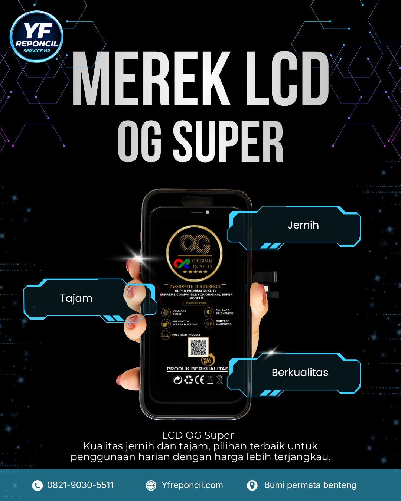
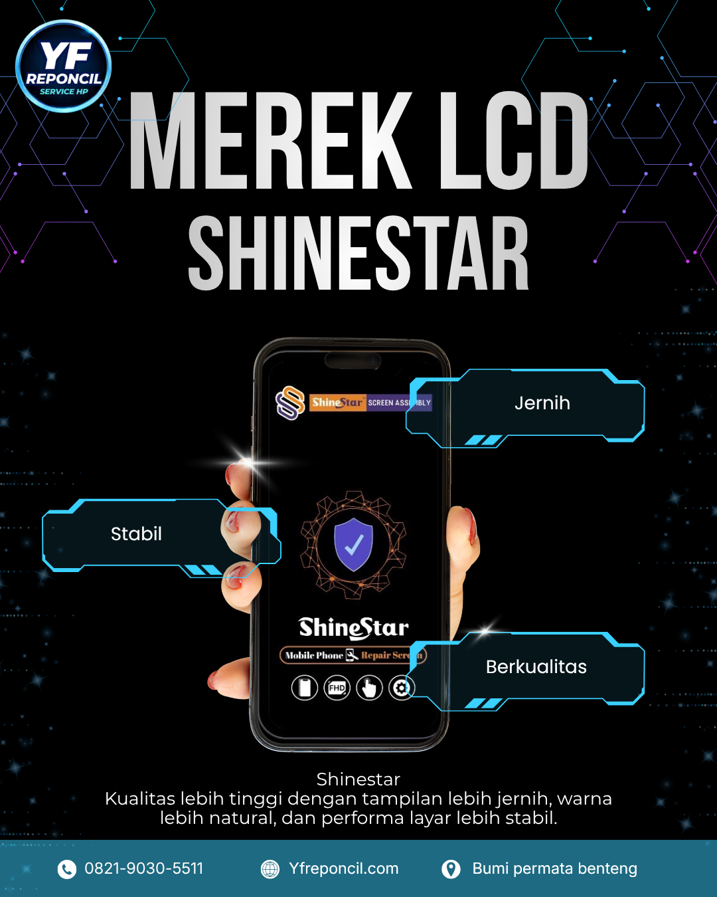
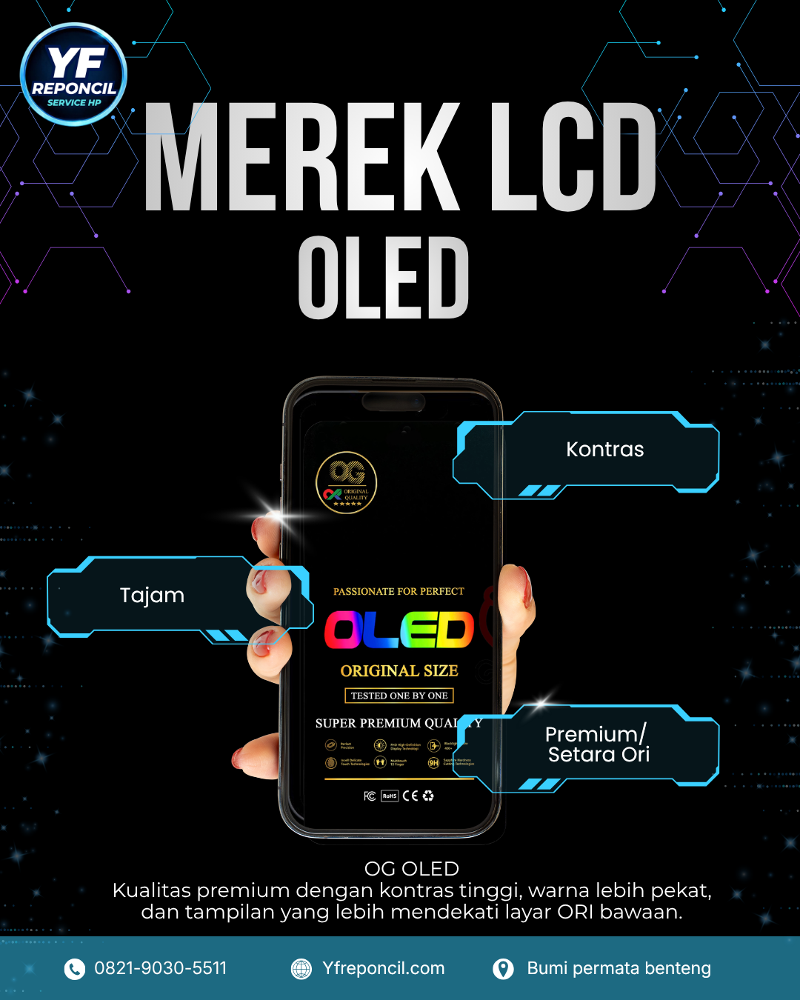
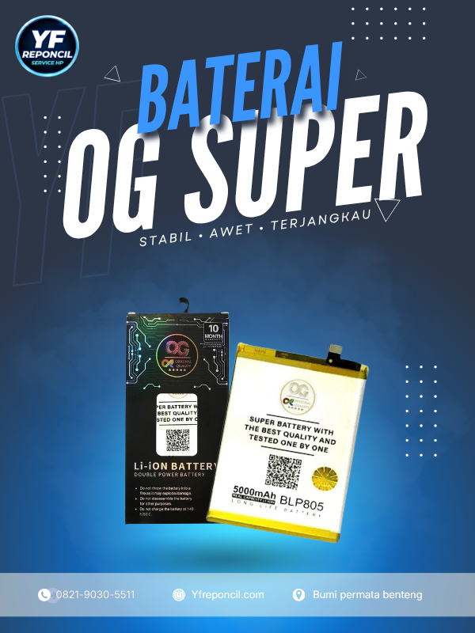
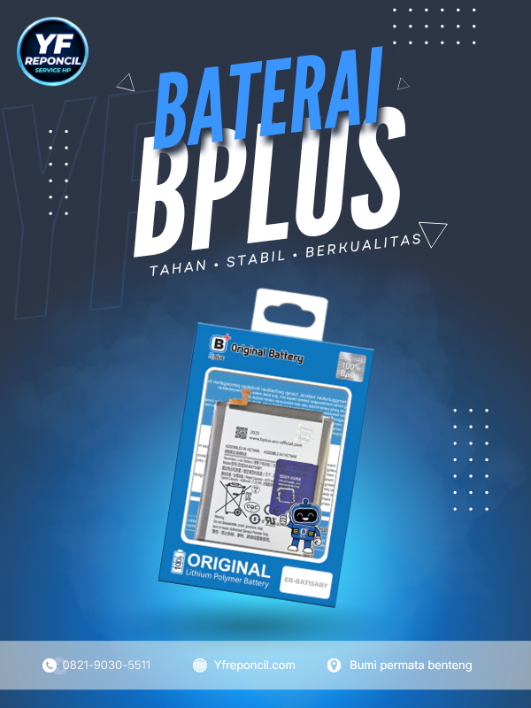
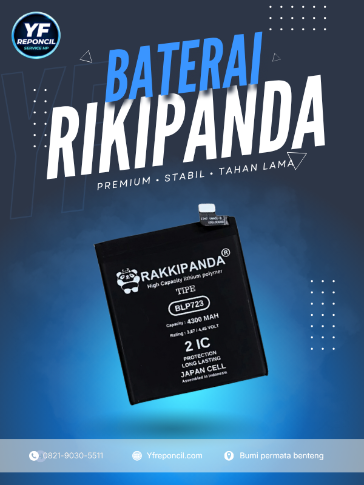

Website ini khusus untuk pemilik YF Reponcil.






Masukkan tipe HP untuk melihat harga dan grup kompatibilitas LCD.
Contoh: Y95, A12, A16, atau Y91C.
Masukkan tipe HP atau kode baterai untuk mencari data harga baterai.
Tambahkan daftar tipe, kode, dan harga baterai pada file assets/battery-data.js.
Kelola data, harga, dan cadangan database YF Reponcil.